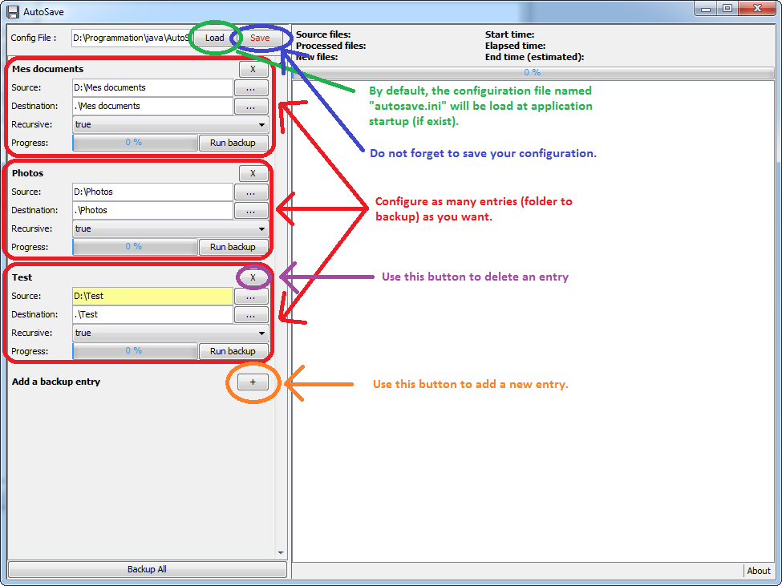
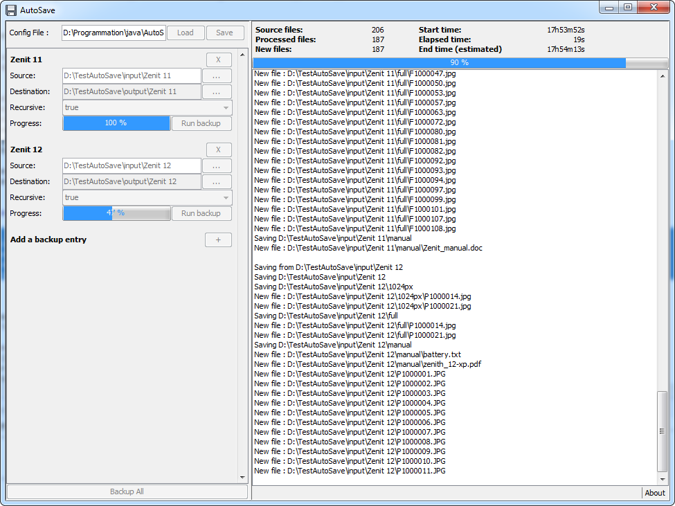

AutoSave is a simple portable application to automatically save (backup) your computer files to your external storage drive.
It does only incremental backup: all new files will be saved; but files which do not more exist on your local computer will not be deleted from the backup (usb drive).
You can download the latest version of AutoSave in the dedicated releases page.
AutoSave is written in JAVA. So it's natively executable on all Operating System (Windows, OsX, Unix/Linux,...). You just need to have a JRE (Java Runtime Environement) installed on your system. Download it here.
1: Just put the autosave.jar file where you wan (internal, external drive).
2: Run it! (double click on it).
3: At the first use, you have to configure which folders you want to backup. For that, use the left panel of the application window.

3.1: By default, the application will automatically load the "autosave.ini" configuration file at startup (in the same folder of "autosave.jar" file). So save your file as this to auto use it
3.2: As you can see, the application manage both absolute path and relative path (relative to the autosave.jar file).
4: Then either you can run bakcup of only one specific entry ('run backup' button in each entry), either bakcup all entries (button at the bottom left of the application).
5: All backup operation will be log into the log part of the application (right part).

Under Windows 7 (and maybe newer version), there are some "hidden" folder in "Documents" (which is in fact "My Document"). These hidden folder are some kind of link, not opennable to : My Music, My Pictures and My Video. If you want to backup your "My document" directory, you must need to add to ignore list:
In french, it's:
Some more explanation here.
You can contribute with AutopSave by installing it, using it, take a look at its source code and submitting issues and pull requests :)
You can follow me: